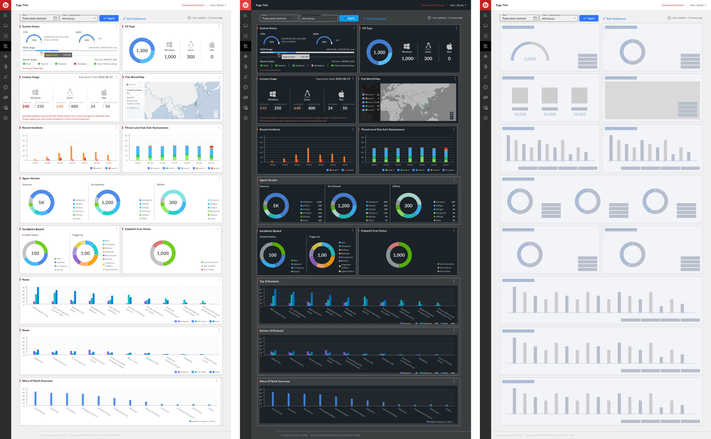

About this Project
The Anti-Ransomware endpoint protection and threat forensics platform detects and identifies threats on endpoint devices (computers) to effectively counter ransomware attacks and safeguard enterprise systems and sensitive data.
Before an attack occurs, the platform continuously gathers threat intelligence and performs comprehensive incident analysis to build a threat intelligence database.
While an attack is underway, it detects threat events in real time, quickly assesses their severity, and triggers preventive measures.
After an attack, it generates threat analysis and incident reports so the enterprise can strengthen prevention and controls going forward.
The platform offers both Endpoint Detection and Response (EDR) and Managed Security Service Provider (MSSP) offerings — proactively collecting and analyzing suspicious attack events in real time to strengthen the enterprise's overall security posture.
Filter Enhancement


- Error State
- Expanded — errors are listed at their position in the dropdown. Collapsed — the error appears beneath the field.
- Default State
- When a single Client is selected, all Depts are selected by default.

- Scenario
- If a Client has no Depts under it, the second-level menu won't expand, and a hint message is shown instead.
- Flow
- If some Depts are selected under Client C, then Client B is selected, and the user switches back to Client C, the previous selections are preserved.
A B2B management interface serving multiple roles — administrators, agents, and clients. The filter governs Client/Department scope across documents and status indicators sitewide; the existing filter behavior was preserved while the optimized version gained a consistent component look.
Each feature needed its own filter logic to handle different client documents and multiple clients/departments, resulting in a proliferation of filter variants. Multi-select across Clients and Departments overloaded data retrieval, and the results couldn't be systematically grouped.
Standardize data search across the board — administrators/agents can search across multiple or single clients, while the Summary Report is limited to a single client/each department, extending into a site-wide setting; other features would be prioritized and quantified afterward.
Refined the existing filter design into a single-select Client / horizontal-select Departments component variant, while also addressing the data-volume problem. The original was multi-select Clients / horizontal-select Depts; this optimization moves to single-select Clients / horizontal-select Depts, consistent with the existing filter interaction. Three design options were proposed, and Option 1 was adopted after discussion.
Custom Dashboard
Custom Dashboard Flow

The dashboard was redesigned for responsive layout (RWD). With all functional areas complete, it was rebuilt to let each client customize the dashboard to their needs.
Search interactions were too complex, the data didn't match how clients actually used it, and real-time monitoring had no accompanying analysis view.
Search was changed to single Client / multiple Depts. Only SuperAdmin permissions can select All Clients, and can't select a Dept — only searches built this way return valid data. The dashboard needed to let clients customize which data mattered to them, and needed a Dark mode.
Individual features were refined into widgets with elevated data. Access is scoped to single Client (horizontal-select Depts) / All Clients across two date ranges, with drag, resize, and thumbnail support. The grid uses a 4-column width with a fixed 4-row height that can extend downward. Widgets can be resized, dragged, and batch-arranged, and link through to detail pages; clicking a number triggers a magnifying highlight effect.
Dashboard Widgets

Widgets come in large, medium, and small sizes. Small widgets show summarized data, while large widgets can display a full month's data range; hovering reveals more detailed figures, and clicking resets the field to the same filter conditions and opens the dedicated detail page. Widgets support thumbnails and resizing for the data-monitoring feature; while data loads, a skeleton state reduces the perceived wait, scaling to match the large/medium/small sizes and also previewing the widget's thumbnail.
Overview
